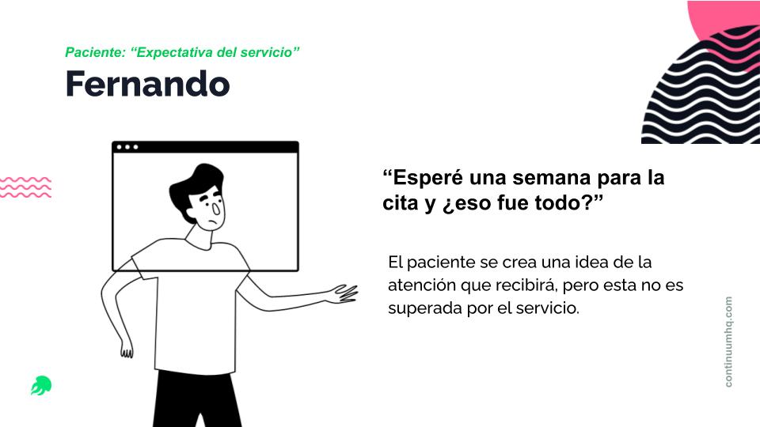
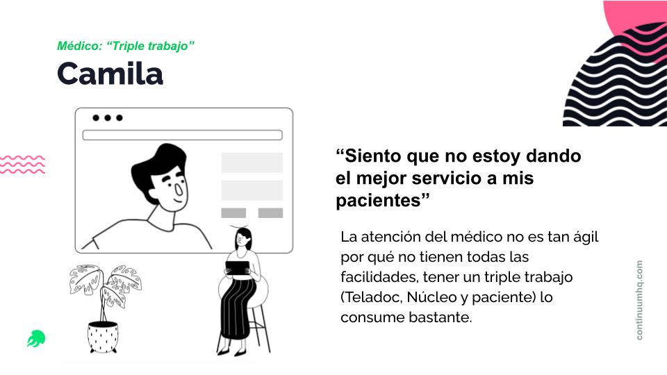
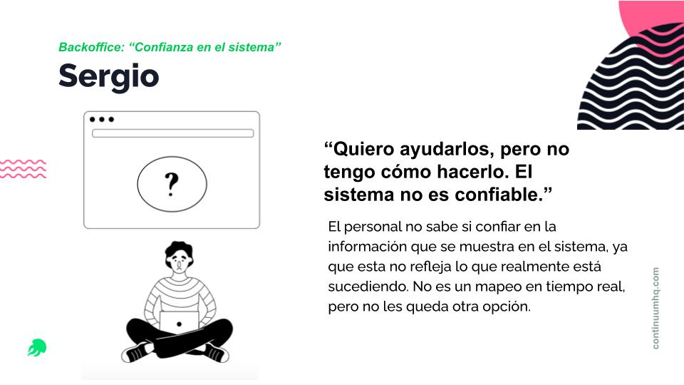
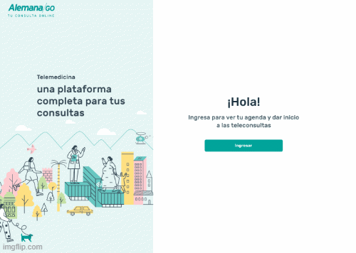
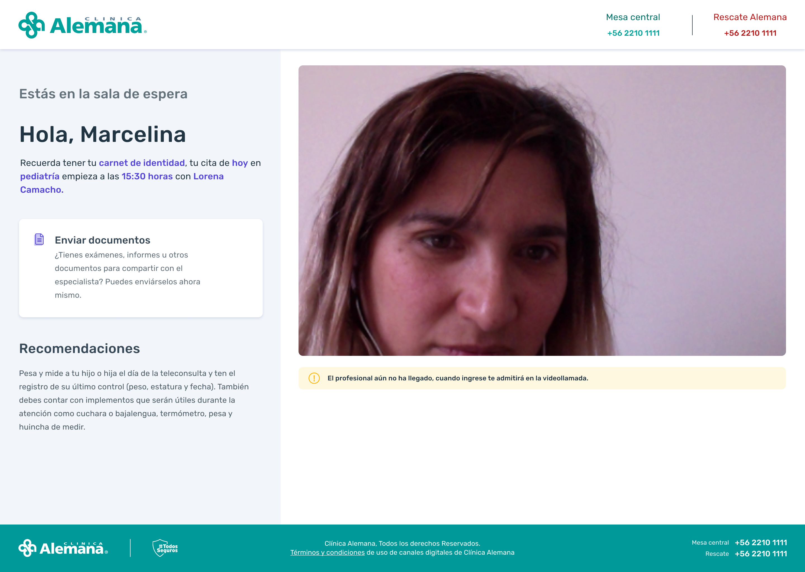

Contexto
Durante el 2020, en plena pandemia, acompañamos a la Clínica Alemana de Santiago en el diseño de su propia plataforma de teleconsulta. Aunque el desarrollo se realizó en paralelo al rediseño de su Agenda Web, ambos equipos trabajamos de forma coordinada para asegurar una experiencia fluida y continua para pacientes y médicos.
Esta nueva solución debía responder a desafíos específicos del contexto sanitario, facilitar la experiencia digital de públicos aún no acostumbrados a este tipo de plataformas y, al mismo tiempo, liberar la carga operativa que enfrentaba el equipo médico.
El proyecto se desarrolló en un ecosistema complejo, coordinando con múltiples equipos y consultoras:
- Continuum (mi equipo): Diseño de la plataforma de teleconsulta
- Equipo paralelo de Continuum: Diseño de agenda web
- Globant: Desarrollo de la app Alemana Go
- 2Brains: Otra plataforma complementaria
- Clínica Alemana: Equipo de diseño interno
El Desafío
¿Cómo diseñar una plataforma de teleconsulta médica desde cero, en plena emergencia sanitaria, que permitiera atención remota segura y eficiente, sin aumentar la carga operativa del personal médico?
Mi Rol en el Proyecto
Participé como diseñadora de servicios, velando por que la experiencia de atención fuera consistente y clara a lo largo de todos los puntos de contacto. Acompañé el proceso durante 14 meses (el equipo continuó después de mi salida), aplicando un enfoque de diseño incremental que nos permitió lanzar una versión inicial en 6 meses y seguir iterando con mejoras de valor para usuarios y equipos.
Composición del equipo:
- Yo (UX/Service Designer + Researcher)
- 1 UX/UI Designer
- 7 Developers
- 1 Project Manager
Mis responsabilidades incluyeron:
- Liderar la investigación con usuarios (médicos y pacientes)
- Mapear sistemas y procesos internos complejos
- Identificar pain points críticos en la experiencia de teleconsulta
- Diseñar flujos de videollamadas, automatización de documentos y pagos
- Facilitar la conexión entre ambos proyectos (Agenda Web y Teleconsulta)
- Trabajar en la integración entre plataformas desde la perspectiva de servicio
- Comunicar hallazgos mediante storytelling visual (presentaciones narrativas)
Enfoque y Proceso
El proyecto se llevó a cabo en un contexto de alta incertidumbre, con un deadline muy ajustado y grandes desafíos para hacer investigación o testeo en terreno. Aun así, diseñamos un proceso enfocado en comprender profundamente los problemas de pacientes, médicos y equipos administrativos.
1. Levantamiento de Hallazgos
Investigación profunda en contexto de emergencia:
- Entrevistas remotas a usuarios (médicos y pacientes)
- Creación de personas: Mariana y Fernando como arquetipos
- Mapeo de sistemas y procesos internos complejos
- Identificación de tareas duplicadas, fricciones y puntos de ruptura
- Análisis de la plataforma existente (Teladoc) y sus limitaciones
- Service Blueprint completo del journey de teleconsulta
2. Diseño de Flujos y Mejoras Clave
Co-creación de soluciones con equipos multidisciplinarios:
- Plataforma de videollamadas propia con métricas clínicas
- Automatización de la entrega de documentos (recetas, boletas, certificados)
- Pago automático al finalizar la consulta, validado por el médico
- Rediseño de flujos internos para eliminar duplicidad de registros
- Creación de sala de espera virtual para disminuir incertidumbre
- Integración fluida con el sistema de Agenda Web
3. Comunicación de Hallazgos
Storytelling como herramienta estratégica:
- Presentación narrativa estructurada como "película" con actos
- Uso de personas para generar empatía con stakeholders
- Service Blueprint para visualizar el ecosistema completo
- Workshops colaborativos para priorizar mejoras
4. Lanzamiento e Iteración
Implementación progresiva con aprendizaje continuo:
- 4 meses: Desarrollo inicial y pruebas internas (friends & family)
- 6 meses: Despliegue completo al público
- +8 meses: Mejoras progresivas basadas en feedback
- Coordinación constante entre equipos de Agenda Web y Teleconsulta
Resultados
Impactos específicos:
- Reducción del 40% en quejas relacionadas con facturación y entrega de documentos
- Se liberó tiempo operativo médico al reducir tareas repetitivas y duplicadas
- Pacientes ganaron claridad sobre su atención y accedieron más fácilmente a sus documentos
- Plataforma 100% alineada con las necesidades clínicas y de gestión interna
- Integración fluida con Agenda Web, sin saltos ni fricciones en la experiencia
- Automatización de procesos administrativos que antes se hacían manualmente
- Sala de espera virtual que redujo la ansiedad de pacientes y médicos
- Sistema de entrega automática de recetas, boletas y certificados médicos
Reflexiones
El storytelling como puente entre la investigación y la acción.
Este proyecto fue un desafío tanto técnico como emocional. Trabajamos con urgencia, pero sin perder el foco humano. La decisión de comunicar los hallazgos mediante una narrativa cinematográfica (los "actos" de Mariana y Fernando) no fue solo una elección creativa, sino estratégica: necesitábamos que stakeholders, desarrolladores y equipos médicos entendieran visceralmente los pain points de los usuarios.
Ver cómo la historia resonaba en las presentaciones, cómo los equipos comenzaban a referirse a "el Acto 4" o "el problema del Mago de Oz", me enseñó que el diseño de servicios no es solo mapear flujos, sino crear lenguajes compartidos que faciliten la toma de decisiones.
La profundidad de la investigación, el cuidado en los detalles y la coordinación entre múltiples equipos hicieron posible algo que parecía inviable en medio de la incertidumbre. Acompañar esta transformación desde el diseño de servicios fue una lección de empatía, estrategia y compromiso con el valor real.
Este proyecto reafirmó mi convicción: las mejores soluciones nacen cuando combinamos rigor metodológico con profunda empatía humana, y cuando sabemos comunicar nuestros hallazgos de forma que inspiren acción.
Recursos Visuales
Service Blueprint
Mapa completo del servicio mostrando todos los touchpoints, actores y sistemas involucrados en la experiencia de teleconsulta.

Service Blueprint completo del journey de teleconsulta
Presentación de Hallazgos e Insights
Storytelling visual con la narrativa de Mariana y Fernando, estructurada como una película con actos que representan los pain points del servicio.

Hallazgos comunicados mediante storytelling cinematográfico
Construction of Personas
Perfiles de usuario creados a partir de la investigación, con sus pain points principales y contexto de uso.

Fernando - Usuario de teleconsulta

Camila - Doctora que atiende a pacientes en teleconsulta

Sergio, Asistente de backoffice
Prototipos - Primera Iteración
Wireframes y prototipos de las vistas principales tanto para médicos como para pacientes.

Vista médico - Panel de consulta

Interface de videollamada paciente